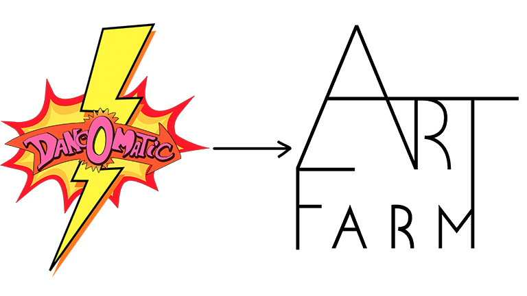

Timeline
2020
The name of the association is changed from danceOmatic to Art Farm to support a more professional association.
The proposal is approved unanimously by the board.

2019
We are doing our first traditional Chinese performance in Kolding Storcenter. Subsequently, we tour in Taiwan with danceOmatic “carry the art.”
We do a voluntary performance for Red Cross holiday camps, and perform the performanceTALKER at Kolding culturenight

2018
The association danceOmatic is founded on 24th of april 2018.
During the year, danceOmatic will be held at the ViaThea Straßen Theater Festival in Görlitz Germany and Kolding Kulturnat.
2017 and before
The projectdanceOmatic receives support from the foundation Aarhus 2017, to develop danceOmatic’s dance machine in a collaboration with Le-Yun’s dance group from Taiwan.
The support spans 2016 and 2017.
In collaboration with Danish and Taiwanese dancers, musicians and stage builders, the concept is performed and developed in Taiwan. The software in the dance machine gets a functional boost, and the dance machine is made mobile and gets a new design.
In Taiwan, five dancers operate in 2016; three from Taiwan and two from Denmark. eqaully so in Denmark in 2017.